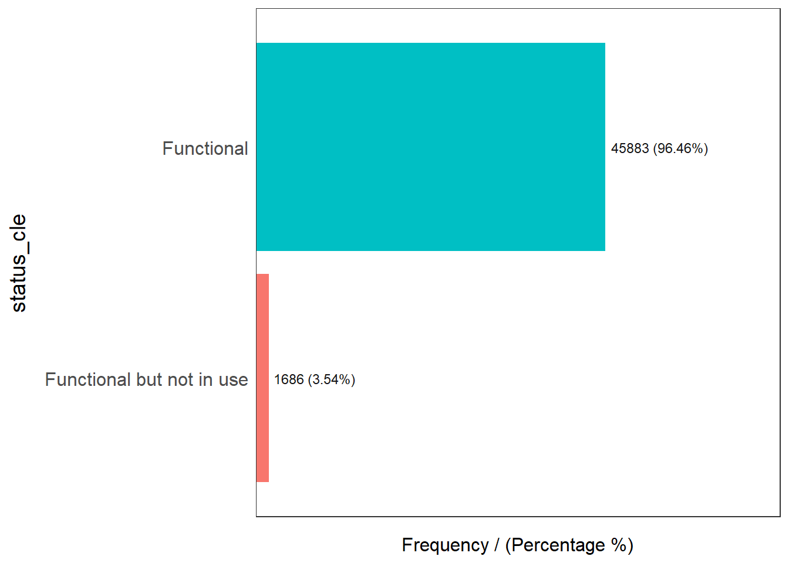

pacman::p_load(sf, tidyverse, tmap, spdep, funModeling)Take_Home_Ex1
Overview
This is take home exercise 1
Getting Started
This code chunk will load the package sf, tidyverse, tmap, spdep and funModeling. If the package is not installed, it will do the installation before loading the package.
Importing Geospatial Data
Importing Water Point Geospatial Data into R
Importing the data as simple feature into R
Recoding NA into string and reducing file size for upload to Git
This code chunk is reading the data from the shapefile downloaded from waterpointdata.org and filtering the rows of interest (information belonging to nigeria).
It also helps to pick out the columns that are useful so that the rds file created will be smaller.
The filtered data will then be written into a rds file that will be read for analysis. In this way, these steps can be omitted in the future runs as the data can be obtained from the rds file created.
wp <- st_read(dsn = "data", layer = "geo_export", crs = 4326) %>% filter(clean_coun == "Nigeria")
wp_1 <- wp %>% mutate(status_cle = replace_na(status_cle, "Unknown")) %>% select(3:4, 9:10, 18:23)
wp_nga <- write_rds(wp_1, "geodata/wp_nga.rds")Importing Nigeria Boundaries Geospatial Data into R
This code chunk will import the Nigeria geographical boundaries from the shapefile downloaded from geoboundaries.org. This will be used for counting points in each polygon.
nga <- st_read(dsn = "data", layer = "geoBoundaries-NGA-ADM2")Reading layer `geoBoundaries-NGA-ADM2' from data source
`C:\sjynic\ISSS624\Take_Home_Ex1\data' using driver `ESRI Shapefile'
Simple feature collection with 774 features and 5 fields
Geometry type: MULTIPOLYGON
Dimension: XY
Bounding box: xmin: 2.668534 ymin: 4.273007 xmax: 14.67882 ymax: 13.89442
Geodetic CRS: WGS 84Data Wrangling
Before analysis, it is important to prepare the data and visualize the data. Clean up data will be easier to work with and prevent any error. It will also give more accurate results.
This code chunk will read the data from the rds file created previously.
wp_nga <- read_rds("geodata/wp_nga.rds")Visualizing the column of interest
This code chunk helps to visualize the different values present in the column ‘status_cle’ and the frequency of each value. This can help us to classify the values into various categories for analysis.
freq(data = wp_nga, input = 'status_cle')Warning: The `<scale>` argument of `guides()` cannot be `FALSE`. Use "none" instead as
of ggplot2 3.3.4.
ℹ The deprecated feature was likely used in the funModeling package.
Please report the issue at <https://github.com/pablo14/funModeling/issues>.
status_cle frequency percentage cumulative_perc
1 Functional 45883 48.29 48.29
2 Non-Functional 29385 30.93 79.22
3 Unknown 10656 11.22 90.44
4 Functional but needs repair 4579 4.82 95.26
5 Non-Functional due to dry season 2403 2.53 97.79
6 Functional but not in use 1686 1.77 99.56
7 Abandoned/Decommissioned 234 0.25 99.81
8 Abandoned 175 0.18 99.99
9 Non functional due to dry season 7 0.01 100.00The status can be divided into 3 broad categories, ‘Functional’ (includes ‘Functional but needs repair’, ‘Functional but not in sure’ and ‘Functional’), ‘Non-Functional’ (includes ‘Non-Functional’, ‘Non-Functional due to dry season’, ‘Non functional due to dry season’, ‘Abandoned’ and ‘Abandoned/Decommissioned’) and lastly ‘Unknown’.
First category ‘Funtional’ waterpoint
This code chunk will filter out rows that belong to functional waterpoints using the values identified from the ‘status_cle’ column.
wpt_functional <- wp_nga %>%
filter(status_cle %in% c("Functional", "Functional but not in use", "Functional but need repair"))freq(data = wpt_functional, input = "status_cle")
status_cle frequency percentage cumulative_perc
1 Functional 45883 96.46 96.46
2 Functional but not in use 1686 3.54 100.00Second category ‘Non-Functional’ waterpoint
This code chunk will filter out rows that belong to non functional waterpoints using the values identified from the ‘status_cle’ column.
wpt_nonfunctional <- wp_nga %>%
filter(status_cle %in% c("Abandoned/Decommissioned", "Abandoned", "Non-Functional", "Non functional due to dry season", "Non-Functional due to dry season"))freq(data=wpt_nonfunctional, input = 'status_cle')
status_cle frequency percentage cumulative_perc
1 Non-Functional 29385 91.25 91.25
2 Non-Functional due to dry season 2403 7.46 98.71
3 Abandoned/Decommissioned 234 0.73 99.44
4 Abandoned 175 0.54 99.98
5 Non functional due to dry season 7 0.02 100.00Third catergory ‘Unknown’ waterpoint
This code chunk will filter out rows that belong to unknown waterpoints using the values identified from the ‘status_cle’ column.
wpt_unknown <- wp_nga %>% filter(status_cle == "Unknown")freq(data=wpt_unknown, input = 'status_cle')
status_cle frequency percentage cumulative_perc
1 Unknown 10656 100 100Number of waterpoints in each polygons
This code chunk will count the number of waterpoints belong to each category in each polygon. It will count the number of points in each category that intersect with each boundary from the geoboundaries simple feature data frame.
nga_wp <- nga %>% mutate(`total wpt` = lengths(st_intersects(nga, wp_nga))) %>% mutate(`wpt functional` = lengths(st_intersects(nga, wpt_functional))) %>% mutate(`wpt non-functional` = lengths(st_intersects(nga, wpt_nonfunctional))) %>% mutate(`wpt unknown` = lengths(st_intersects(nga, wpt_unknown)))Saving the analytical data table
This code chunk will create two more columns as calculation of the percentage of the functional and non functional waterpoints against the total waterpoints present.
nga_wp <- nga_wp %>% mutate(pct_functional = `wpt functional`/`total wpt`) %>% mutate(`pct_non-functional` = `wpt non-functional`/`total wpt`)This code chunk will update the existing data file with the new columns.
write_rds(nga_wp, "geodata/nga_wp.rds")Visualizing the spatial distribution of waterpoints
This code chunk draw a choropleth map for each category including the total waterpoints. Then the maps are arranged side by side for better comparison.
nga_wp <- read_rds("geodata/nga_wp.rds")
total <- qtm(nga_wp, "total wpt")
wp_functional <- qtm(nga_wp, "wpt functional")
wp_nonfunctional <- qtm(nga_wp, "wpt non-functional")
unknown <- qtm(nga_wp, "wpt unknown")
tmap_arrange(total, wp_functional, wp_nonfunctional, unknown, asp=1, ncol=2)
Computing Contiguity Spatial Weight
Visualizing Contiguity Weights
To visualize the contiguity weights, we need to draw a connectivity graph and the most typical method is using the polygon centroids. Therefore, we will need to get the coordinate of each centroid.
The code chunk below will get the longitude of each centroid.
longitude <- map_dbl(nga_wp$geometry, ~st_centroid(.x)[[1]])This code chunk below will get the latitude of each centroid
latitude <- map_dbl(nga_wp$geometry, ~st_centroid(.x)[[2]])This code chunk below will map each longitude to the latitude giving the coordinate of each centroid
coords <- cbind(longitude, latitude)This code chunk will list the centroids with their respective coodinates.
head(coords) longitude latitude
[1,] 7.372450 5.113107
[2,] 7.352131 5.083219
[3,] 13.322900 13.428835
[4,] 6.847325 8.825812
[5,] 7.771541 5.022061
[6,] 8.219654 6.259845Adaptive Distance Weight Matrix
The neighbors need to be assigned weights and an equal weight style is used.
To resolve the problem of fixed distance weight matrix, a adaptive distance weight matrix can be used to control the number of neighbors using k-nearest neighbors.
This code chunk uses the coordinates of the centroids that were calculated and together with the number of neighbors set, a adaptive distance weight matrix can be computed using the k-nearest neighbor function.
knn8 <- knn2nb(knearneigh(coords, k=8))
knn8Neighbour list object:
Number of regions: 774
Number of nonzero links: 6192
Percentage nonzero weights: 1.033592
Average number of links: 8
Non-symmetric neighbours listThis code chunk will list out the polygons and their respective neighbors.
str(knn8)List of 774
$ : int [1:8] 2 321 364 548 597 624 721 725
$ : int [1:8] 1 321 548 597 624 721 725 726
$ : int [1:8] 250 261 447 477 492 507 509 526
$ : int [1:8] 12 20 257 263 446 454 466 690
$ : int [1:8] 203 208 286 288 331 334 539 738
$ : int [1:8] 170 217 218 337 379 553 577 601
$ : int [1:8] 8 176 214 281 283 306 544 555
$ : int [1:8] 7 214 281 306 327 544 555 651
$ : int [1:8] 18 19 218 337 574 576 601 757
$ : int [1:8] 25 216 325 364 365 528 552 632
$ : int [1:8] 26 27 43 68 191 524 565 762
$ : int [1:8] 135 263 417 429 446 454 690 695
$ : int [1:8] 31 37 211 320 393 570 583 584
$ : int [1:8] 170 363 379 546 563 577 581 589
$ : int [1:8] 22 49 82 177 297 306 580 623
$ : int [1:8] 30 187 188 296 328 357 360 635
$ : int [1:8] 35 275 295 378 460 591 638 639
$ : int [1:8] 9 19 218 376 574 576 601 757
$ : int [1:8] 9 18 56 103 376 574 576 601
$ : int [1:8] 4 106 125 239 263 419 454 466
$ : int [1:8] 60 61 162 269 520 578 596 626
$ : int [1:8] 49 297 326 443 515 623 682 693
$ : int [1:8] 54 291 292 536 537 614 618 619
$ : int [1:8] 84 123 437 476 527 652 673 761
$ : int [1:8] 10 181 216 314 325 366 552 730
$ : int [1:8] 11 27 68 191 336 439 562 762
$ : int [1:8] 11 26 191 439 562 565 663 762
$ : int [1:8] 29 178 299 300 301 358 369 598
$ : int [1:8] 172 173 178 182 358 378 460 591
$ : int [1:8] 16 39 41 186 192 329 357 360
$ : int [1:8] 13 37 211 289 561 570 583 584
$ : int [1:8] 51 62 461 462 515 623 682 693
$ : int [1:8] 47 166 227 238 242 655 743 750
$ : int [1:8] 42 104 136 137 213 553 559 757
$ : int [1:8] 17 275 276 277 278 279 295 460
$ : int [1:8] 50 107 247 408 432 455 681 759
$ : int [1:8] 38 40 211 212 570 583 584 629
$ : int [1:8] 30 39 40 41 186 192 320 570
$ : int [1:8] 30 38 40 41 186 192 320 329
$ : int [1:8] 37 38 39 41 186 192 320 570
$ : int [1:8] 30 38 39 40 186 192 360 634
$ : int [1:8] 86 136 137 499 587 613 718 734
$ : int [1:8] 11 68 157 524 549 565 590 645
$ : int [1:8] 16 45 192 290 303 328 360 634
$ : int [1:8] 44 187 290 303 328 341 360 599
$ : int [1:8] 387 417 429 438 459 521 668 742
$ : int [1:8] 33 111 166 234 238 691 698 750
$ : int [1:8] 65 113 265 386 407 428 482 701
$ : int [1:8] 22 32 297 326 515 623 682 693
$ : int [1:8] 36 98 107 247 409 416 432 681
$ : int [1:8] 32 62 461 462 515 580 623 693
$ : int [1:8] 53 78 165 293 532 602 603 636
$ : int [1:8] 52 78 80 165 280 602 621 636
$ : int [1:8] 23 79 293 294 532 536 537 618
$ : int [1:8] 122 169 246 333 430 571 605 697
$ : int [1:8] 77 368 376 533 534 576 601 728
$ : int [1:8] 53 58 199 312 322 323 621 622
$ : int [1:8] 57 322 323 564 602 603 621 622
$ : int [1:8] 88 128 129 259 493 700 714 748
$ : int [1:8] 61 158 563 578 589 592 596 626
$ : int [1:8] 21 60 269 578 589 592 596 626
$ : int [1:8] 32 51 461 462 515 623 682 693
$ : int [1:8] 90 237 384 416 467 497 765 772
$ : int [1:8] 48 65 74 113 131 265 386 407
$ : int [1:8] 48 64 74 113 265 407 683 701
$ : int [1:8] 19 103 104 288 331 338 351 574
$ : int [1:8] 347 348 560 566 567 609 640 694
$ : int [1:8] 11 43 157 190 191 549 590 645
$ : int [1:8] 140 146 248 274 473 500 512 513
$ : int [1:8] 71 298 299 301 341 343 344 610
$ : int [1:8] 70 172 173 298 299 343 344 625
$ : int [1:8] 17 361 566 567 568 609 638 639
$ : int [1:8] 72 361 374 377 404 607 665 666
$ : int [1:8] 65 109 113 251 265 683 741 754
$ : int [1:8] 110 272 398 422 433 485 501 768
$ : int [1:8] 254 287 427 459 470 547 647 677
$ : int [1:8] 56 195 533 534 579 618 619 728
$ : int [1:8] 52 54 79 80 165 215 532 636
$ : int [1:8] 54 78 165 293 532 579 618 636
$ : int [1:8] 52 53 78 165 215 280 636 739
$ : int [1:8] 99 145 227 233 426 483 689 760
$ : int [1:8] 15 32 49 51 177 352 580 623
$ : int [1:8] 132 258 383 414 433 529 767 768
$ : int [1:8] 24 131 148 386 437 482 673 692
$ : int [1:8] 105 156 267 394 654 675 707 712
$ : int [1:8] 42 136 137 499 587 613 718 734
$ : int [1:8] 149 151 221 226 399 410 486 657
$ : int [1:8] 59 116 128 150 489 648 700 714
$ : int [1:8] 260 408 463 542 674 676 681 759
$ : int [1:8] 63 163 236 237 384 452 710 765
$ : int [1:8] 160 271 388 406 473 475 492 525
$ : int [1:8] 95 119 390 391 392 423 487 656
$ : int [1:8] 73 354 374 402 594 607 665 666
$ : int [1:8] 13 31 60 158 436 561 596 709
$ : int [1:8] 92 390 391 392 405 423 469 656
$ : int [1:8] 97 139 389 403 420 451 488 653
$ : int [1:8] 96 168 389 420 451 653 662 773
$ : int [1:8] 50 117 153 231 409 432 696 708
$ : int [1:8] 81 145 426 483 667 689 760 769
[list output truncated]
- attr(*, "region.id")= chr [1:774] "1" "2" "3" "4" ...
- attr(*, "call")= language knearneigh(x = coords, k = 8)
- attr(*, "sym")= logi FALSE
- attr(*, "type")= chr "knn"
- attr(*, "knn-k")= num 8
- attr(*, "class")= chr "nb"This code chunk will plot the connectivity graph of the weight matrix that we computed.
plot(nga_wp$geometry, border="lightgrey")
plot(knn8, coords, pch = 19, cex = 0.6, add = TRUE, col = "red")
This code chunk convert the weight matrix into a nb2 list object so that it can be used for the global Moran’s I test.
rswm_ad <- nb2listw(knn8, style="W", zero.policy = TRUE)Analysis on functional waterpoints
Checking if cluster(s) present for functional waterpoints
This code chunk does the global Moran’s I test on the percentage of functional waterpoint in each polygon against the total number of waterpoints. The result of the test will indicate if there are clusters of waterpoints or the waterpoints’ location are truly random.
moran.test(nga_wp$`pct_functional`,
listw=rswm_ad,
zero.policy = TRUE,
na.action=na.omit)
Moran I test under randomisation
data: nga_wp$pct_functional
weights: rswm_ad
omitted: 3, 86, 241, 250, 252, 261, 400, 406, 447, 473, 492, 507, 526
Moran I statistic standard deviate = 31.359, p-value < 2.2e-16
alternative hypothesis: greater
sample estimates:
Moran I statistic Expectation Variance
0.5380484916 -0.0013157895 0.0002958303 The Moran ’s I index of 0.538 is positive, which indicate that there are spatial clusters and the result is significant as show by the p-value of less than 0.025 (2 tiers test with 95% confidence interval) indicating that the waterpoints are not arranged in random. Null hypothesis stating that the waterpoints arrangement are random is rejected.
set.seed(1234)
bperm_ad_functional = moran.mc(nga_wp$`pct_functional`,
listw=rswm_ad,
nsim=999,
zero.policy = TRUE,
na.action=na.omit)
bperm_ad_functional
Monte-Carlo simulation of Moran I
data: nga_wp$pct_functional
weights: rswm_ad
omitted: 3, 86, 241, 250, 252, 261, 400, 406, 447, 473, 492, 507, 526
number of simulations + 1: 1000
statistic = 0.53805, observed rank = 1000, p-value = 0.001
alternative hypothesis: greaterMonte Carlo simulation was done 1000 times to get the average Moran’s Index. The result shows that the initial Moran’s I test result is consistent with the results from the simulation.
Locating the clusters of functional waterpoints
After doing the global Moran’s I test to check if clusters are present in the data. Local Moran’s I test can be done to check the location of the clusters and at the same time determine if they are truly a cluster or outlier.
This code chunk convert the NA in the ‘pct_functional’ and ‘pct_non-functional’ columns to 0 so that it can be added to the local Moran’s I test.
nga_wp <- nga_wp %>% mutate(pct_functional = replace_na(pct_functional, 0)) %>% mutate(`pct_non-functional` = replace_na(`pct_non-functional`, 0))This code chunk does the local Moran’s I test based on the percentage of functional waterpoints.
fips_wp <- order(nga_wp$shapeName)
localMI_wp_functional <- localmoran(nga_wp$`pct_functional`, rswm_ad)
head(localMI_wp_functional) Ii E.Ii Var.Ii Z.Ii Pr(z != E(Ii))
1 0.84542213 -1.098697e-03 0.1052193855 2.6096951 9.062296e-03
2 0.33951212 -1.654843e-04 0.0158628092 2.6969746 6.997260e-03
3 2.93445092 -4.844691e-03 0.4622235317 4.3233186 1.536995e-05
4 -0.05487696 -9.606346e-05 0.0092089820 -0.5708517 5.681001e-01
5 -0.01202210 -1.993161e-06 0.0001910895 -0.8695410 3.845513e-01
6 0.40561569 -5.012843e-04 0.0480354063 1.8529786 6.388542e-02This code chunk map the local Moran’s I test results to their respective polygons so that it can be plotted out for visualization to do better analysis.
nga.localMI_functional <- cbind(nga_wp,localMI_wp_functional) %>%
rename(Pr.Ii = Pr.z....E.Ii..)This code chunk will draw out the map using the tmap functions
tm_shape(nga.localMI_functional) +
tm_fill(col = "Ii",
style = "pretty",
palette = "RdBu",
title = "local moran statistics") +
tm_borders(alpha = 0.5)Variable(s) "Ii" contains positive and negative values, so midpoint is set to 0. Set midpoint = NA to show the full spectrum of the color palette.
This results show that the clusters are present at the north and north east part of the country indicated by the dark blue polygons.
The dark red polygon at the south part of the map is an outlier with very negative local Moran’s I index
This code chunk map the local Moran’s I test results to their respective polygons so that it can be plotted out for visualization to do better analysis.
tm_shape(nga.localMI_functional) +
tm_fill(col = "Pr.Ii",
breaks=c(-Inf, 0.001, 0.01, 0.05, 0.1, Inf),
palette="-Blues",
title = "local Moran's I p-values") +
tm_borders(alpha = 0.5)The dark blue areas shows those local Moran’I index are significant as they represent value less than the significant level of less than 0.025.
The code chunk will draw the map of the local Moran’s I index side by side the map of the local Moran’s I p-values.
ngalocalMI_functional.map <- tm_shape(nga.localMI_functional) +
tm_fill(col = "Ii",
style = "pretty",
title = "local moran statistics") +
tm_borders(alpha = 0.5)
ngapvalue_functional.map <- tm_shape(nga.localMI_functional) +
tm_fill(col = "Pr.Ii",
breaks=c(-Inf, 0.001, 0.01, 0.05, 0.1, Inf),
palette="-Blues",
title = "local Moran's I p-values") +
tm_borders(alpha = 0.5)
tmap_arrange(ngalocalMI_functional.map, ngapvalue_functional.map, asp=1, ncol=2)Variable(s) "Ii" contains positive and negative values, so midpoint is set to 0. Set midpoint = NA to show the full spectrum of the color palette.
As shown in both map, both the clusters (colored in dark green on the left) and outlier (colored in orange on the left) are significant which indicate that they are not random.
Preparing LISA cluster map for functional waterpoints
The code chunks below show the steps to prepare a LISA cluster map.
quadrant <- vector(mode="numeric",length=nrow(nga.localMI_functional))Next, derives the spatially lagged variable of interest (i.e. pct_functional) and centers the spatially lagged variable around its mean
nga_wp$lag_functional <- lag.listw(rswm_ad, nga_wp$`pct_functional`)
nga_DV_functional <- nga_wp$lag_functional - mean(nga_wp$lag_functional) This is follow by centering the local Moran's around the mean.
nga_LM_I_functional <- localMI_wp_functional[,1] - mean(localMI_wp_functional[,1])Next, we will set a statistical significance level for the local Moran.
signif <- 0.05These four command lines define the low-low (1), low-high (2), high-low (3) and high-high (4) categories.
quadrant[nga_DV_functional <0 & nga_LM_I_functional>0] <- 1
quadrant[nga_DV_functional >0 & nga_LM_I_functional<0] <- 2
quadrant[nga_DV_functional <0 & nga_LM_I_functional<0] <- 3
quadrant[nga_DV_functional >0 & nga_LM_I_functional>0] <- 4 Lastly, places non-significant Moran in the category 0.
quadrant[localMI_wp_functional[,5]>signif] <- 0Plotting LISA map for functional waterpoints
nga.localMI_functional$quadrant <- quadrant
colors <- c("#ffffff", "#2c7bb6", "#abd9e9", "#fdae61", "#d7191c")
clusters <- c("insignificant", "low-low", "low-high", "high-low", "high-high")
nga_LISAMap_functional <- tm_shape(nga.localMI_functional) +
tm_fill(col = "quadrant",
style = "cat",
palette = colors[c(sort(unique(quadrant)))+1],
labels = clusters[c(sort(unique(quadrant)))+1],
popup.vars = c("")) +
tm_view(set.zoom.limits = c(11,17)) +
tm_borders(alpha=0.5)
nga_LISAMap_functionalThe LISA map shows that the cluster in the north are low-low cluster and the outlier at the south is a low-high outlier.
tmap_arrange(wp_functional, nga_LISAMap_functional, asp=1, ncol=2)tmap_arrange(ngalocalMI_functional.map, ngapvalue_functional.map, asp=1, ncol=2)Variable(s) "Ii" contains positive and negative values, so midpoint is set to 0. Set midpoint = NA to show the full spectrum of the color palette.Hot Spot and Cold Spot Area Analysis
Getis and Ord's G-Statistics
An alternative spatial statistics to detect spatial anomalies is the Getis and Ord's G-statistics (Getis and Ord, 1972; Ord and Getis, 1995). It looks at neighbours within a defined proximity to identify where either high or low values clutser spatially. Here, statistically significant hot-spots are recognised as areas of high values where other areas within a neighbourhood range also share high values too.
Convert the weight matrix into spatial weight object
This code chunk will convert the weight matrix into a spatial weight object using the nb2listw()
knn_lw <- nb2listw(knn8, style="B")
summary(knn_lw)Characteristics of weights list object:
Neighbour list object:
Number of regions: 774
Number of nonzero links: 6192
Percentage nonzero weights: 1.033592
Average number of links: 8
Non-symmetric neighbours list
Link number distribution:
8
774
774 least connected regions:
1 2 3 4 5 6 7 8 9 10 11 12 13 14 15 16 17 18 19 20 21 22 23 24 25 26 27 28 29 30 31 32 33 34 35 36 37 38 39 40 41 42 43 44 45 46 47 48 49 50 51 52 53 54 55 56 57 58 59 60 61 62 63 64 65 66 67 68 69 70 71 72 73 74 75 76 77 78 79 80 81 82 83 84 85 86 87 88 89 90 91 92 93 94 95 96 97 98 99 100 101 102 103 104 105 106 107 108 109 110 111 112 113 114 115 116 117 118 119 120 121 122 123 124 125 126 127 128 129 130 131 132 133 134 135 136 137 138 139 140 141 142 143 144 145 146 147 148 149 150 151 152 153 154 155 156 157 158 159 160 161 162 163 164 165 166 167 168 169 170 171 172 173 174 175 176 177 178 179 180 181 182 183 184 185 186 187 188 189 190 191 192 193 194 195 196 197 198 199 200 201 202 203 204 205 206 207 208 209 210 211 212 213 214 215 216 217 218 219 220 221 222 223 224 225 226 227 228 229 230 231 232 233 234 235 236 237 238 239 240 241 242 243 244 245 246 247 248 249 250 251 252 253 254 255 256 257 258 259 260 261 262 263 264 265 266 267 268 269 270 271 272 273 274 275 276 277 278 279 280 281 282 283 284 285 286 287 288 289 290 291 292 293 294 295 296 297 298 299 300 301 302 303 304 305 306 307 308 309 310 311 312 313 314 315 316 317 318 319 320 321 322 323 324 325 326 327 328 329 330 331 332 333 334 335 336 337 338 339 340 341 342 343 344 345 346 347 348 349 350 351 352 353 354 355 356 357 358 359 360 361 362 363 364 365 366 367 368 369 370 371 372 373 374 375 376 377 378 379 380 381 382 383 384 385 386 387 388 389 390 391 392 393 394 395 396 397 398 399 400 401 402 403 404 405 406 407 408 409 410 411 412 413 414 415 416 417 418 419 420 421 422 423 424 425 426 427 428 429 430 431 432 433 434 435 436 437 438 439 440 441 442 443 444 445 446 447 448 449 450 451 452 453 454 455 456 457 458 459 460 461 462 463 464 465 466 467 468 469 470 471 472 473 474 475 476 477 478 479 480 481 482 483 484 485 486 487 488 489 490 491 492 493 494 495 496 497 498 499 500 501 502 503 504 505 506 507 508 509 510 511 512 513 514 515 516 517 518 519 520 521 522 523 524 525 526 527 528 529 530 531 532 533 534 535 536 537 538 539 540 541 542 543 544 545 546 547 548 549 550 551 552 553 554 555 556 557 558 559 560 561 562 563 564 565 566 567 568 569 570 571 572 573 574 575 576 577 578 579 580 581 582 583 584 585 586 587 588 589 590 591 592 593 594 595 596 597 598 599 600 601 602 603 604 605 606 607 608 609 610 611 612 613 614 615 616 617 618 619 620 621 622 623 624 625 626 627 628 629 630 631 632 633 634 635 636 637 638 639 640 641 642 643 644 645 646 647 648 649 650 651 652 653 654 655 656 657 658 659 660 661 662 663 664 665 666 667 668 669 670 671 672 673 674 675 676 677 678 679 680 681 682 683 684 685 686 687 688 689 690 691 692 693 694 695 696 697 698 699 700 701 702 703 704 705 706 707 708 709 710 711 712 713 714 715 716 717 718 719 720 721 722 723 724 725 726 727 728 729 730 731 732 733 734 735 736 737 738 739 740 741 742 743 744 745 746 747 748 749 750 751 752 753 754 755 756 757 758 759 760 761 762 763 764 765 766 767 768 769 770 771 772 773 774 with 8 links
774 most connected regions:
1 2 3 4 5 6 7 8 9 10 11 12 13 14 15 16 17 18 19 20 21 22 23 24 25 26 27 28 29 30 31 32 33 34 35 36 37 38 39 40 41 42 43 44 45 46 47 48 49 50 51 52 53 54 55 56 57 58 59 60 61 62 63 64 65 66 67 68 69 70 71 72 73 74 75 76 77 78 79 80 81 82 83 84 85 86 87 88 89 90 91 92 93 94 95 96 97 98 99 100 101 102 103 104 105 106 107 108 109 110 111 112 113 114 115 116 117 118 119 120 121 122 123 124 125 126 127 128 129 130 131 132 133 134 135 136 137 138 139 140 141 142 143 144 145 146 147 148 149 150 151 152 153 154 155 156 157 158 159 160 161 162 163 164 165 166 167 168 169 170 171 172 173 174 175 176 177 178 179 180 181 182 183 184 185 186 187 188 189 190 191 192 193 194 195 196 197 198 199 200 201 202 203 204 205 206 207 208 209 210 211 212 213 214 215 216 217 218 219 220 221 222 223 224 225 226 227 228 229 230 231 232 233 234 235 236 237 238 239 240 241 242 243 244 245 246 247 248 249 250 251 252 253 254 255 256 257 258 259 260 261 262 263 264 265 266 267 268 269 270 271 272 273 274 275 276 277 278 279 280 281 282 283 284 285 286 287 288 289 290 291 292 293 294 295 296 297 298 299 300 301 302 303 304 305 306 307 308 309 310 311 312 313 314 315 316 317 318 319 320 321 322 323 324 325 326 327 328 329 330 331 332 333 334 335 336 337 338 339 340 341 342 343 344 345 346 347 348 349 350 351 352 353 354 355 356 357 358 359 360 361 362 363 364 365 366 367 368 369 370 371 372 373 374 375 376 377 378 379 380 381 382 383 384 385 386 387 388 389 390 391 392 393 394 395 396 397 398 399 400 401 402 403 404 405 406 407 408 409 410 411 412 413 414 415 416 417 418 419 420 421 422 423 424 425 426 427 428 429 430 431 432 433 434 435 436 437 438 439 440 441 442 443 444 445 446 447 448 449 450 451 452 453 454 455 456 457 458 459 460 461 462 463 464 465 466 467 468 469 470 471 472 473 474 475 476 477 478 479 480 481 482 483 484 485 486 487 488 489 490 491 492 493 494 495 496 497 498 499 500 501 502 503 504 505 506 507 508 509 510 511 512 513 514 515 516 517 518 519 520 521 522 523 524 525 526 527 528 529 530 531 532 533 534 535 536 537 538 539 540 541 542 543 544 545 546 547 548 549 550 551 552 553 554 555 556 557 558 559 560 561 562 563 564 565 566 567 568 569 570 571 572 573 574 575 576 577 578 579 580 581 582 583 584 585 586 587 588 589 590 591 592 593 594 595 596 597 598 599 600 601 602 603 604 605 606 607 608 609 610 611 612 613 614 615 616 617 618 619 620 621 622 623 624 625 626 627 628 629 630 631 632 633 634 635 636 637 638 639 640 641 642 643 644 645 646 647 648 649 650 651 652 653 654 655 656 657 658 659 660 661 662 663 664 665 666 667 668 669 670 671 672 673 674 675 676 677 678 679 680 681 682 683 684 685 686 687 688 689 690 691 692 693 694 695 696 697 698 699 700 701 702 703 704 705 706 707 708 709 710 711 712 713 714 715 716 717 718 719 720 721 722 723 724 725 726 727 728 729 730 731 732 733 734 735 736 737 738 739 740 741 742 743 744 745 746 747 748 749 750 751 752 753 754 755 756 757 758 759 760 761 762 763 764 765 766 767 768 769 770 771 772 773 774 with 8 links
Weights style: B
Weights constants summary:
n nn S0 S1 S2
B 774 599076 6192 11152 201942Computing the Gi Statistics
This code chunk will compute the Gi values for the proportion of functional waterpoints using the adaptive weight matrix
fips <- order(nga_wp$shapeName)
gi.adaptive_functional <- localG(nga_wp$`pct_functional`, knn_lw)
nga_functional.gi <- cbind(nga_wp, as.matrix(gi.adaptive_functional)) %>%
rename(gstat_adaptive = as.matrix.gi.adaptive_functional.)This code chunk will map the Gi values using adaptive weight matrix
Gimap_functional <- tm_shape(nga_functional.gi) +
tm_fill(col = "gstat_adaptive",
style = "pretty",
palette="-RdBu",
title = "local Gi") +
tm_borders(alpha = 0.5)
tmap_arrange(wp_functional,
Gimap_functional,
asp=1,
ncol=2)Variable(s) "gstat_adaptive" contains positive and negative values, so midpoint is set to 0. Set midpoint = NA to show the full spectrum of the color palette.Analysis on non functional waterpoints
Checking if cluster(s) present for functional waterpoints
This code chunk does the global Moran’s I test on the percentage of non functional waterpoint in each polygon against the total number of waterpoints. The result of the test will indicate if there are clusters of waterpoints or the waterpoints’ location are truly random.
moran.test(nga_wp$`pct_non-functional`,
listw=rswm_ad,
zero.policy = TRUE,
na.action=na.omit)
Moran I test under randomisation
data: nga_wp$`pct_non-functional`
weights: rswm_ad
Moran I statistic standard deviate = 27.244, p-value < 2.2e-16
alternative hypothesis: greater
sample estimates:
Moran I statistic Expectation Variance
0.4606940775 -0.0012936611 0.0002875562 The Moran ’s I index of 0.461 is positive, which indicate that there are spatial clusters and the result is significant as show by the p-value of less than 0.025 (2 tiers test with 95% confidence interval) indicating that the waterpoints are not arranged in random. Null hypothesis stating that the waterpoints arrangement are random is rejected.
set.seed(1234)
bperm_ad_nonfunctional = moran.mc(nga_wp$`pct_non-functional`,
listw=rswm_ad,
nsim=999,
zero.policy = TRUE,
na.action=na.omit)
bperm_ad_nonfunctional
Monte-Carlo simulation of Moran I
data: nga_wp$`pct_non-functional`
weights: rswm_ad
number of simulations + 1: 1000
statistic = 0.46069, observed rank = 1000, p-value = 0.001
alternative hypothesis: greaterMonte Carlo simulation was done 1000 times to get the average Moran’s Index. The result shows that the initial Moran’s I test result is consistent with the results from the simulation.
Locating the clusters of functional waterpoints
After doing the global Moran’s I test to check if clusters are present in the data. Local Moran’s I test can be done to check the location of the clusters and at the same time determine if they are truly a cluster or outlier.
fips_wp <- order(nga_wp$shapeName)
localMI_wp_nonfunctional <- localmoran(nga_wp$`pct_non-functional`, rswm_ad)
head(localMI_wp_nonfunctional) Ii E.Ii Var.Ii Z.Ii Pr(z != E(Ii))
1 0.6758946 -0.0008481017 0.08124087 2.374304 1.758207e-02
2 0.6206028 -0.0005236472 0.05017720 2.772853 5.556728e-03
3 2.6961131 -0.0037801442 0.36104279 4.493319 7.012162e-06
4 0.2169765 -0.0016485516 0.15779059 0.550376 5.820615e-01
5 0.8924913 -0.0007647464 0.07326225 3.300166 9.662752e-04
6 0.5741337 -0.0009383859 0.08988120 1.918173 5.508904e-02This code chunk map the local Moran’s I test results to their respective polygons so that it can be plotted out for visualization to do better analysis.
nga.localMI_nonfunctional <- cbind(nga_wp,localMI_wp_nonfunctional) %>%
rename(Pr.Ii = Pr.z....E.Ii..)This code chunk will draw out the map using the tmap functions
tm_shape(nga.localMI_nonfunctional) +
tm_fill(col = "Ii",
style = "pretty",
palette = "RdBu",
title = "local moran statistics") +
tm_borders(alpha = 0.5)Variable(s) "Ii" contains positive and negative values, so midpoint is set to 0. Set midpoint = NA to show the full spectrum of the color palette.This results show that the clusters are present at the north and north east part of the country indicated by the dark blue polygons.
The dark red polygon at the south part of the map is an outlier with very negative local Moran’s I index.
This code chunk will map the local Moran’s I p-values to each polygon and draw the map out using the tmap functions.
tm_shape(nga.localMI_nonfunctional) +
tm_fill(col = "Pr.Ii",
breaks=c(-Inf, 0.001, 0.01, 0.05, 0.1, Inf),
palette="-Blues",
title = "local Moran's I p-values") +
tm_borders(alpha = 0.5)The dark blue areas shows those local Moran’I index are significant as they represent value less than the significant level of less than 0.025.
The code chunk will draw the map of the local Moran’s I index side by side the map of the local Moran’s I p-values.
ngalocalMI_nonfunctional.map <- tm_shape(nga.localMI_nonfunctional) +
tm_fill(col = "Ii",
style = "pretty",
title = "local moran statistics") +
tm_borders(alpha = 0.5)
ngapvalue_nonfunctional.map <- tm_shape(nga.localMI_nonfunctional) +
tm_fill(col = "Pr.Ii",
breaks=c(-Inf, 0.001, 0.01, 0.05, 0.1, Inf),
palette="-Blues",
title = "local Moran's I p-values") +
tm_borders(alpha = 0.5)
tmap_arrange(ngalocalMI_nonfunctional.map, ngapvalue_nonfunctional.map, asp=1, ncol=2)Variable(s) "Ii" contains positive and negative values, so midpoint is set to 0. Set midpoint = NA to show the full spectrum of the color palette.As shown in both map, the cluster (colored in dark green on the left) and outlier (colored in orange on the left) are significant which indicate that they are not random.
Preparing LISA cluster map for non functional waterpoints
The code chunks below show the steps to prepare a LISA cluster map.
quadrant <- vector(mode="numeric",length=nrow(nga.localMI_nonfunctional))Next, derives the spatially lagged variable of interest (i.e. pct_functional) and centers the spatially lagged variable around its mean
nga_wp$lag_nonfunctional <- lag.listw(rswm_ad, nga_wp$`pct_non-functional`)
nga_DV_nonfunctional <- nga_wp$lag_nonfunctional - mean(nga_wp$lag_nonfunctional) This is follow by centering the local Moran's around the mean.
nga_LM_I_nonfunctional <- localMI_wp_nonfunctional[,1] - mean(localMI_wp_nonfunctional[,1])Next, we will set a statistical significance level for the local Moran.
signif <- 0.05These four command lines define the low-low (1), low-high (2), high-low (3) and high-high (4) categories.
quadrant[nga_DV_nonfunctional <0 & nga_LM_I_nonfunctional>0] <- 1
quadrant[nga_DV_nonfunctional >0 & nga_LM_I_nonfunctional<0] <- 2
quadrant[nga_DV_nonfunctional <0 & nga_LM_I_nonfunctional<0] <- 3
quadrant[nga_DV_nonfunctional >0 & nga_LM_I_nonfunctional>0] <- 4 Lastly, places non-significant Moran in the category 0.
quadrant[localMI_wp_nonfunctional[,5]>signif] <- 0Plotting LISA map for non functional waterpoints
nga.localMI_nonfunctional$quadrant <- quadrant
colors <- c("#ffffff", "#2c7bb6", "#abd9e9", "#fdae61", "#d7191c")
clusters <- c("insignificant", "low-low", "low-high", "high-low", "high-high")
nga_LISAMap_nonfunctional <- tm_shape(nga.localMI_nonfunctional) +
tm_fill(col = "quadrant",
style = "cat",
palette = colors[c(sort(unique(quadrant)))+1],
labels = clusters[c(sort(unique(quadrant)))+1],
popup.vars = c("")) +
tm_view(set.zoom.limits = c(11,17)) +
tm_borders(alpha=0.5)
nga_LISAMap_nonfunctionalThe LISA map shows that the cluster in the north are low-low cluster and the outlier at the south is a low-high outlier.
tmap_arrange(wp_nonfunctional, nga_LISAMap_nonfunctional, asp=1, ncol=2)tmap_arrange(ngalocalMI_nonfunctional.map, ngapvalue_nonfunctional.map, asp=1, ncol=2)Variable(s) "Ii" contains positive and negative values, so midpoint is set to 0. Set midpoint = NA to show the full spectrum of the color palette.
Hot Spot and Cold Spot Area Analysis
Getis and Ord's G-Statistics
An alternative spatial statistics to detect spatial anomalies is the Getis and Ord's G-statistics (Getis and Ord, 1972; Ord and Getis, 1995). It looks at neighbours within a defined proximity to identify where either high or low values clutser spatially. Here, statistically significant hot-spots are recognised as areas of high values where other areas within a neighbourhood range also share high values too.
Computing the Gi Statistics
This code chunk will compute the Gi values for the proportion of non functional waterpoints using the adaptive weight matrix
fips <- order(nga_wp$shapeName)
gi.adaptive_nonfunctional <- localG(nga_wp$`pct_non-functional`, knn_lw)
nga_nonfunctional.gi <- cbind(nga_wp, as.matrix(gi.adaptive_nonfunctional)) %>%
rename(gstat_adaptive = as.matrix.gi.adaptive_nonfunctional.)This code chunk will map the Gi values using adaptive weight matrix
Gimap_nonfunctional <- tm_shape(nga_nonfunctional.gi) +
tm_fill(col = "gstat_adaptive",
style = "pretty",
palette="-RdBu",
title = "local Gi") +
tm_borders(alpha = 0.5)
tmap_arrange(wp_nonfunctional,
Gimap_nonfunctional,
asp=1,
ncol=2)Variable(s) "gstat_adaptive" contains positive and negative values, so midpoint is set to 0. Set midpoint = NA to show the full spectrum of the color palette.